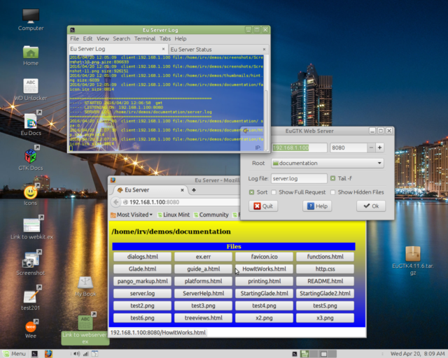
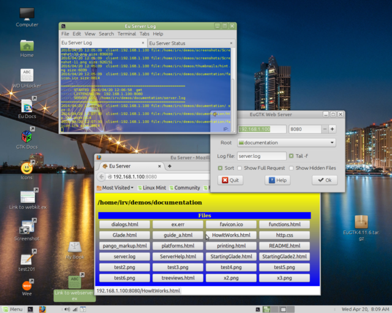
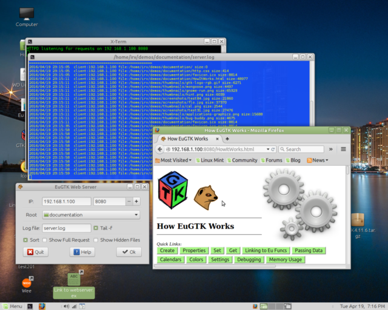

Httpd.ex can work from a command line - just issue %> eui httpd to see the options. When running from the command line, you'll need to enter your server's IP address (use ifconfig to get that), and port, perhaps 8080, and the root (starting directory).
You can run more than one server at a time, just use a different port for each. For example, set the root to your Music/Blues folder, using port 8081, and the root to your Music/Opera folder, using port 8082 - that way, listeners won't have to wade thru albums they may not care to hear.
To make the server easier to use, I've added the EuGTK GUI shown above, which lets you select some options, and then starts the server running in the background when you click the OK button. Once it's running, you just enter the IP address and port in your tablet or phone's browser address bar to connect. e.g: 192.168.1.100:8080
httpd.ex
- -bind required ip_address:port, e.g. 192.168.1.100:8080
- -root required e.g. /home/irv/demos/documentation
- -log optional, name of log file
- -h optional, show hidden files in directory listing
- -s optional, sort directory listings
- -r optional, include full request and response in log
- -t optional, number of tries to obtain port before giving up
webserver.ex (the GUI)
- IP:
- Your network address, or 127.0.0.1 (a.k.a. localhost) if not networked. This should be filled in automatically. If it's wrong, use ifconfig to get the network address of your computer.
- Port:
- use 8080, 8081, etc. -- Avoid port 80
- Root:
- Starting (root) directory to serve up. Set this to your Music directory or a mounted music CD. Also, try your Pictures directory, Demos, etc... I have tried to make it difficult to browse 'off-limits', i.e: into files or folders which are not in or subfolders of doc_root. You may have better ideas than I do on this topic. Please contribute!
- Log file:
- Name of a file to write transactions to. A new log file will be created if necessary. You should delete it when no longer needed, since it continues to grow... I suggest you make the log file a hidden file, so it won't show in normal directory listings. Log entries will have date and time, client IP, plus name of file requested.
- Tail -f:
- If checked, opens a terminal which follows the log file.
- Sort:
- If checked, sorts the file listing.
- Show Full Request
- Adds the full request string to the server log.
- Show Hidden:
- If checked, show hidden files along with others in the directory listing.
The appearance of the page is controlled by a file named .httpd.css, if it exists in the currently-browsed folder. This is done so that directory listings from different folders can have their own individual appearance (see screenshot above). If no .httpd.css exists in a given folder, defaults built into httpd.ex will be used.
Above, webserver.ex serving a specified file as entered on the address bar, or by clicking on a link in a previous page.
After closing the server, or a crash, it may take several seconds or minutes for your computer to free the port you've used. Trying to run again too soon using the same port will result in an error (-2). I have included a loop which will retry up to 20 times (unless overridden by the -t option), and then abort. If this happens, and you are running from the GUI, you can try hitting the OK button again, or change to a different port.